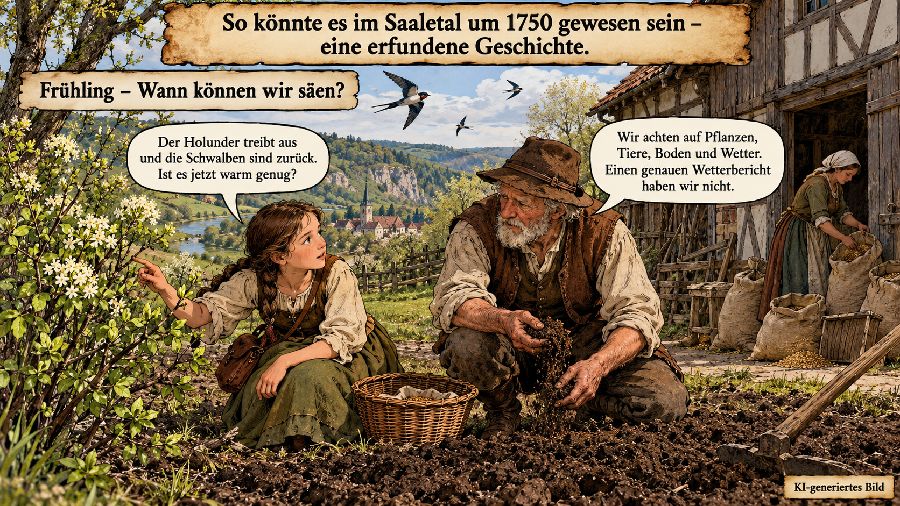
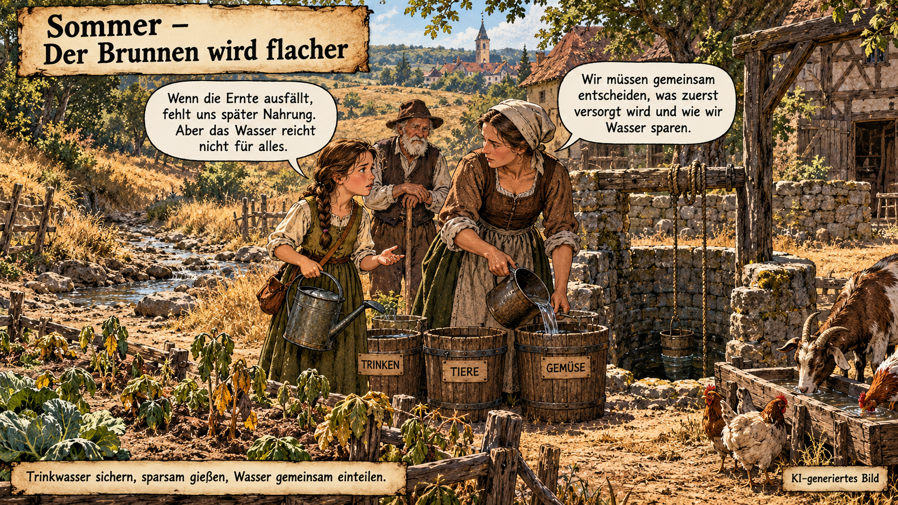
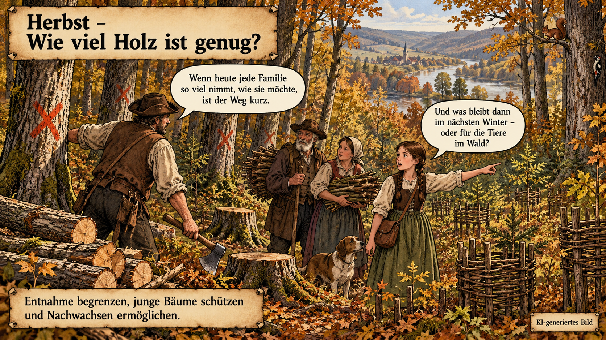
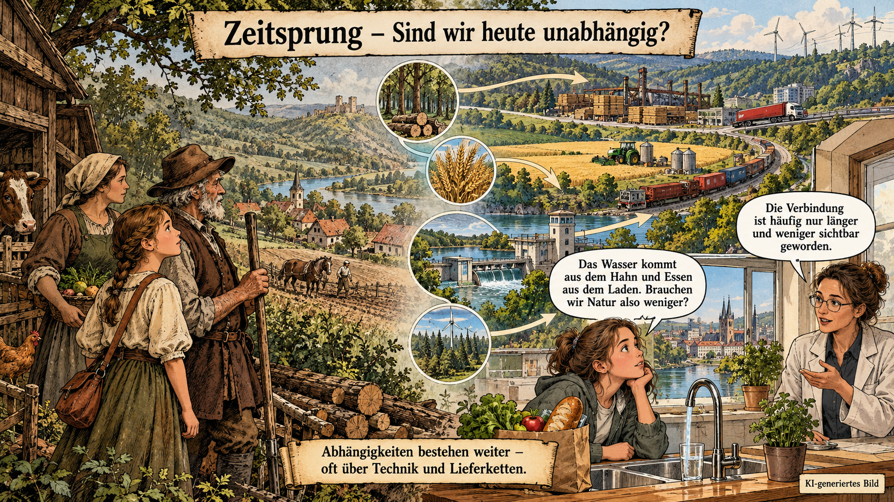
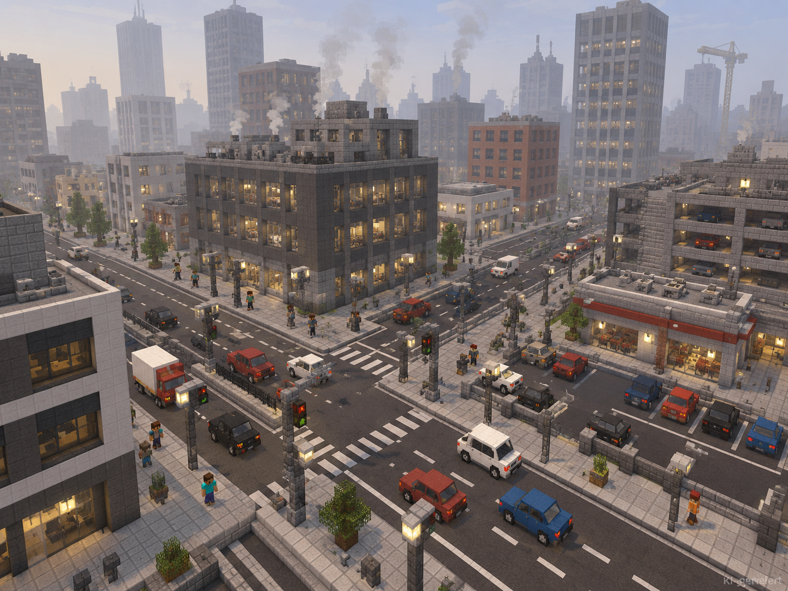

Wie können wir unsere Stadt klimafreundlicher und lebenswerter bauen?
Euer Auftrag
Bearbeitet die sechs Lernkarten der Reihe nach. Löst alle Quizfragen und sammelt am Ende eure wichtigsten Antworten auf Moderationskarten
01
Menschen und Natur früher
Natur war Lebensgrundlage – und nie nur Kulisse
offen
Umweltgeschichte in 60 Sekunden
Umweltgeschichte fragt: Wie haben Menschen Natur genutzt, verändert und geschützt? Schon lange vor Fabriken waren Menschen von Wasser, Boden, Wäldern, Tieren und Wetter abhängig. Sie beobachteten Jahreszeiten, planten Aussaat und Ernte und nutzten Holz oder Lehm zum Bauen.
Dabei gingen Menschen nicht immer vorsichtig vor. Wälder konnten übernutzt und Böden ausgelaugt werden. Deshalb entstanden auch Regeln: Wann darf Holz geschlagen werden? Wo dürfen Tiere weiden? Wie bleibt genug für das nächste Jahr?
Jahreszeiten
Genau beobachten
Blüte, Regen und Frost halfen dabei, den richtigen Zeitpunkt für Aussaat und Ernte zu finden.
Feld & Weide
Boden nutzen
Menschen bauten Nahrung an und hielten Tiere. Schlechte Nutzung konnte Böden schwächen.
Wald
Rohstoffe teilen
Holz lieferte Wärme und Baumaterial. Regeln sollten verhindern, dass zu viel entnommen wird.
Wasser
Gemeinsam schützen
Brunnen, Bäche und Mühlen waren wichtig. Verschmutztes Wasser schadete vielen Menschen.
Ein Jahr im Saaletal – um 1750
Begleitet die erfundene Familie Bauer durch vier Jahreszeiten. Ihr erlebt, wie eng ihr Alltag mit Wetter, Boden, Wasser, Pflanzen und Wald verbunden ist: Wann ist der richtige Zeitpunkt zum Säen? Wie wird knappes Wasser gerecht verteilt? Wie viel Holz darf aus dem Wald genommen werden? Bei jeder Station trefft ihr eine Entscheidung und überlegt, welche Folgen sie für Menschen und Natur hat. Die Geschichte steht beispielhaft für eine bäuerliche Lebenswelt um 1750; sie behauptet nicht, dass alle Menschen früher gleich lebten oder dieselben Erfahrungen machten.
Bild 1 von 4Frühling · Wann können wir säen?
Nach einem langen Winter sind die Getreidevorräte knapp. Der Boden ist noch feucht und kalte Nächte sind möglich.

Bild 2 von 4Sommer · Der Brunnen wird flacher
Wochenlang fällt wenig Regen. Der Bach führt weniger Wasser, Gemüse welkt und auch die Tiere müssen trinken.

Bild 3 von 4Herbst · Wie viel Holz ist genug?
Für den Winter werden Brenn- und Bauholz gebraucht. Der nahe Wald wächst jedoch langsamer nach, als viele Familien Holz entnehmen könnten.

Bild 4 von 4Zeitsprung · Sind wir heute unabhängig?
Heute kommen Nahrung, Energie und Baustoffe oft aus weit entfernten Regionen. Technik und Handel machen Versorgung verlässlicher – aber die Naturabhängigkeit verschwindet nicht.

🧩 Kurz verbinden
Natur beeinflusst Menschen – Menschen beeinflussen Natur
Ordnet die Beispiele zu. Manchmal stimmt beides: Eine Überschwemmung beeinflusst Menschen, aber Menschen verändern mit Ackerbau oder Holzeinschlag auch ihre Umwelt.
Zieht eine Karte in eine Spalte. Ohne Maus: Karte anklicken, dann die Zielspalte anklicken.
Ziehe jede Karte in eine Kategorie. „Beides“ ist hier ebenfalls möglich.
Verbindung zur Gegenwart
… und heute?
Was nimmst du in deinem Alltag unmittelbar um dich herum wahr?
Denke an alles, was du siehst, wahrnimmst oder benutzt: zum Beispiel Wasserhähne, Duschen, Ampeln, Straßenbahnen, Klimaanlagen, Bäume, Straßen oder Gebäude.
Tipp: Nenne eine konkrete Sache und beschreibe kurz, was dir daran auffällt.
02
Klima verstehen
Von Natur zum Klima: Warum wird es wärmer?
offen
📖 Verstehen
Menschen beziehen Ressourcen aus der Natur
Wasser, Boden, Holz, Sonne und Tiere machen unser Leben möglich. Daraus gewinnen wir Nahrung, Baumaterialien, Wärme und Energie. Menschen bauen Häuser, Wege und Felder – und verändern damit Orte.
🌳WaldHolz und Lebensraum💧WasserTrinken und Leben🌾BodenNahrung wächst hier☀️SonneWärme und Energie🐑TiereNahrung und Materialien
📖 Verstehen
Wetter kann man beobachten und messen
Mit Thermometer, Regenmesser oder Windmesser können wir beobachten, wie das Wetter heute ist. Wenn Fachleute viele Messungen über lange Zeit vergleichen, können sie erkennen, wie es um das Klima steht.
🧩 Klar unterscheiden
Wetter oder Klima?
Wetter beschreibt, was heute oder morgen passiert. Klima beschreibt typische Verhältnisse über viele Jahre.
Zieht jede Aussage in eine Spalte. Ohne Maus: Karte anklicken, dann „Wetter“ oder „Klima“ anklicken.
Ziehe alle Aussagen in eine Kategorie.
📖 Verstehen
Warum wird es wärmer?
Um die Erde liegt die Atmosphäre. Einige Gase darin nehmen einen Teil der Wärme auf und geben sie wieder ab.
Das ist wichtig: Ohne den natürlichen Treibhauseffekt wäre es auf der Erde sehr kalt. Zusätzliche Treibhausgase verändern jedoch den Wärmehaushalt.
🧩 Beobachtungsauftrag
Bewege den Regler langsam nach rechts. Was passiert mit der Atmosphäre? Und was mit der Wärme?
Zum Beispiel durch die Verbrennung von Kohle, Erdöl und Erdgas.
?
Temperaturwirkung🌡️ normal
Was du im Bild erkennen kannst
Die gelben Pfeile zeigen Sonnenenergie. Ein Teil der roten Wärmepfeile geht weiter ins Weltall, ein anderer Teil wird von der Atmosphäre aufgenommen und wieder abgegeben. So bleibt genug Wärme für Leben auf der Erde.
🔎 Genau genommen
Die Sonne sendet überwiegend kurzwellige Strahlung. Ein Teil wird von Wolken, Luft und hellen Flächen zurückgeworfen; ein anderer Teil erwärmt die Erdoberfläche.
Die erwärmte Erde gibt Energie als langwellige Wärmestrahlung (Infrarot) ab. Treibhausgase wie Wasserdampf und CO₂ können bestimmte Teile dieser Wärmestrahlung aufnehmen und selbst wieder Wärmestrahlung in verschiedene Richtungen abgeben.
Mehr zusätzliche Treibhausgase verändern dadurch die Energiebilanz: Zunächst gelangt im Mittel weniger Wärme ins All, als von der Sonne ins Erdsystem kommt. Erde und untere Atmosphäre erwärmen sich, bis Ein- und Ausstrahlung im Durchschnitt wieder zusammenpassen. Die Animation zeigt dieses Zusammenspiel stark vereinfacht.
Vgl. Wildbichler, Haagen-Schützenhöfer & Schubatzky (2025), S. 117.
🧩 Zusammenfassen
Beobachtung und Vermutung
Für Neugierige: noch mehr über Klima und Jena erfahren
Warum sprechen Fachleute oft von 30 Jahren?
Damit man nicht nur einzelne warme oder kalte Jahre betrachtet. Viele Jahre zeigen eher, was für einen Ort typisch ist.
Und anderswo?
Weltweit schmelzen Gletscher und der Meeresspiegel steigt. Die Folgen treffen nicht alle Orte und Menschen gleich stark.
Wenn sich das Klima über lange Zeit verändert, kann das Menschen und Natur vor neue Aufgaben stellen. Nicht jedes einzelne Ereignis liegt am Klimawandel. Er kann aber manche Extremwetterereignisse wahrscheinlicher oder stärker machen.
Schaut genau hin
Warum ist es hier so heiß?
Denkt an einen Ort, den ihr kennt: den Pausenhof, eine Bushaltestelle oder euren Weg nach Hause.
Vgl. Kumar et al. (2024), PDF S. 1.
1 · Was sehen wir?Der Boden glüht.
Es gibt kaum Schatten und keinen kühlen Platz zum Sitzen.
2 · Warum?Zu viel Grau, zu wenig Grün.
Asphalt und Beton werden in der Sonne sehr heiß. Bäume fehlen.
3 · Was hilft?Schatten und Pflanzen.
Ein Baum braucht Zeit. Ein Sonnensegel kann schneller helfen.
Drei Ideen zum Anschauen
BAUSTEIN 01
Schatten schaffen
Bäume, Sonnensegel oder überdachte Sitzplätze schützen Menschen vor direkter Sonne.
BAUSTEIN 02
Grün statt Grau
Wiesen, Beete und begrünte Dächer heizen sich weniger stark auf als Asphalt und Beton.
BAUSTEIN 03
Helle Wege
Helle Beläge werden in der Sonne nicht so heiß. Das macht den Weg angenehmer.
Schaut genau hin
Warum bleibt das Regenwasser hier stehen?
Denkt an einen starken Schauer: Wohin fließt das Wasser auf dem Schulhof oder auf dem Weg?
1 · Was sehen wir?Regen bleibt auf dem Asphalt.
Pfützen werden groß. Das Wasser kann kaum in den Boden.
2 · Warum?Der Boden ist zu sehr zugebaut.
Asphalt und Beton lassen Wasser fast nicht durch. Pflanzen fehlen.
3 · Was hilft?Platz für Wasser machen.
Mulden, Beete und Bäume halten Regen fest und helfen beim Versickern.
Drei Ideen zum Anschauen
BAUSTEIN 01
Regenmulde oder Beet
Eine flache Mulde oder ein Regenbeet sammelt Wasser bei einem starken Schauer.
BAUSTEIN 02
Durchlässige Wege
Auf Kies, Rasengittersteinen oder speziellem Pflaster kann mehr Wasser in den Boden gelangen.
BAUSTEIN 03
Bäume und grüne Dächer
Pflanzen halten Wasser zurück. Ihre Wurzeln lockern den Boden und helfen auch gegen Hitze.
Schaut genau hin
Warum finden Tiere hier kaum etwas?
Denkt an Bienen, Vögel oder Igel: Was brauchen sie an einem Ort?
1 · Was sehen wir?Wenig Blüten und Verstecke.
Zwischen Straßen und Häusern finden Tiere kaum Futter oder Schutz.
2 · Warum?Grüne Orte sind zu weit weg.
Rasen, Asphalt und Parkplätze helfen Insekten und Vögeln nur wenig.
3 · Was hilft?Mehr kleine grüne Orte.
Blumen, Hecken und Wasserstellen können Tiere einladen.
Drei Ideen zum Anschauen
BAUSTEIN 01
Blüten und Nahrung
Blühflächen mit verschiedenen Pflanzen geben Insekten über viele Monate Nahrung.
BAUSTEIN 02
Schutz und Wasser
Hecken, Sträucher, Totholz und flache Wasserstellen bieten Schutz und Trinkmöglichkeiten.
BAUSTEIN 03
Grüne Verbindungen
Bäume, Beete und Hecken verbinden Lebensräume, damit Tiere sich bewegen können.
Schaut genau hin
Was passiert, wenn lange Regen fehlt?
Pflanzen brauchen Wasser und passende Temperaturen. Das gilt für Bäume im Wald genauso wie für Lebensmittel auf dem Feld.
1 · Was sehen wir?Erde wird trocken.
Blätter hängen herunter, Wiesen werden gelb und Pflanzen wachsen schlechter.
2 · Wer ist betroffen?Natur und Nahrung.
Wälder werden schwächer; bei manchen Pflanzen kann die Ernte kleiner ausfallen.
3 · Was hilft?Wasser und gesunder Boden.
Bäume, humusreicher Boden und Regenwasser-Speicher helfen, Wasser länger am Ort zu halten.
04
Neue Phase: Ort planen
JenaCraft-Mission: Baut einen Ort für die Zukunft
offen
Ihr habt in Lernkarte 3 ein Problem ausgewählt. Jetzt schaut ihr genauer hin: Wie kann ein Ort Menschen und Natur helfen – auch bei Hitze und Starkregen? Dafür braucht Natur genauso Platz wie Wege, Häuser und Spielorte.
Vier Blickrichtungen
Was braucht ein guter Ort?
Eine gute Idee hilft möglichst mehreren Dingen zugleich.
🌳
Schatten
Wo wird es im Sommer zu heiß?
💧
Regen
Wo kann Wasser hin?
🐝
Natur
Wer findet Schutz und Nahrung?
🚶
Alltag
Was brauchen Menschen vor Ort?
Vgl. Kabisch et al. (Hrsg.) (2017), Einleitungskapitel S. 1.
Beispiel: Wasser und Schwammstadt
Wohin mit dem Regen?
Dieses Beispiel zeigt, wie eine Maßnahme an mehreren Problemen helfen kann: Eine Schwammstadt hält Regen dort, wo er fällt. Boden, Pflanzen, Mulden und Teiche nehmen ihn auf; auf Asphalt und Dächern fließt er dagegen schnell weiter.
Vgl. Davis & Naumann (2017), S. 123.
VARIANTE A
Viel Grau
Asphalt, Dächer und Parkplatz.

Auf vielen versiegelten Flächen kann Regen kaum in den Boden.
Regen fällt.
Wasser versickert kaum.
Viel fließt gleichzeitig ab.
VARIANTE B
Stadt wie ein Schwamm
Grünflächen, Bäume, Mulden und Teich.
Boden, Pflanzen und Wasserflächen geben dem Regen Platz.
Regen fällt.
Boden und Pflanzen nehmen ihn auf.
Weniger fließt sofort ab.
1HinschauenWas fällt euch auf?
2VergleichenWo ist es anders?
3NachfragenWer ist betroffen?
Euer Blick
Denkt an euren Schulweg, den Pausenhof oder zuhause.
Beschreibt nur eine Sache, die ihr dort beobachten würdet. Eine gute Beobachtung ist konkreter als ein langer Text.
05
Entscheidungen treffen
Eure klimaangepasste Stadt
offen
Nehmt euer Problem aus Lernkarte 3 mit: Eine starke Idee muss nicht riesig sein. Sie soll zu eurem Ort passen und für Menschen, Tiere oder Pflanzen einen Unterschied machen. Probiert erst die Planungs-Challenge aus.
Fünf Bereiche, ein Ort
Stadtplanung sind verbundene Entscheidungen
Ihr müsst nicht jedes Element einbauen. Fragt bei jeder Idee: Passt sie zu unserem Ort? Wem hilft sie? Was verändert sie noch?
🌳
Natur
Bestehende Bäume erhalten, Pflanzen und Tiere verbinden.
💧
Wasser
Regen speichern, versickern lassen und wieder nutzen.
🌡️
Hitze
Schatten, Grün und Wasser machen Orte angenehmer.
🚲
Mobilität
Kurze Wege für Menschen zu Fuß, mit Rad, Bus und Bahn.
🏛️
Gebäude & Geschichte
Fläche sinnvoll nutzen und Bestehendes weiterdenken.
Beispiel: Hitze in der Stadt
Wo würdest du an einem heißen Tag lieber sein?
Auch wenn ihr ein anderes Problem gewählt habt: Dieses Beispiel zeigt, wie ihr später Lösungen vergleichen könnt. Platz A hat dunklen Asphalt und keine Bäume. Platz B hat Bäume, Schatten, Pflanzen, Wasser und hellere Flächen.
Mehrfachnutzen
Eine Idee kann mehrere Probleme gleichzeitig lösen
Vgl. Kabisch et al. (Hrsg.) (2017), Einleitungskapitel S. 1; Kumar et al. (2024), PDF S. 1.
Standortfrage
Wo hilft welche Maßnahme?
Nicht nur was gebaut wird, ist wichtig. Überlegt, welche Maßnahme an diesem Ort besonders gut zum Problem passt. Mehrere Antworten können sinnvoll sein.
10 Planungspunkte
Was bekommt in eurer Stadt Platz?
Ihr könnt nicht alles gleichzeitig bauen. Wählt Maßnahmen. Es gibt kein richtig oder falsch – achtet darauf, was eure Auswahl gut kann und was vielleicht noch fehlt.
Wählt bis zu 10 Punkte. Denkt an Schatten, Wasser, Wege und Platz zum Wohnen.
Idee 1Ausdenken
Idee 2Anders denken
Daumen-Check
Wie stark hilft jede Idee?
Gebt jeder Idee einen Daumen. Die Punkte sind nur ein Gesprächsstart: Wichtiger ist, warum ihr euch am Ende entscheidet.
Abwägen statt abhaken
Zwei schwierige Entscheidungen
Stadtplanung hat selten nur eine richtige Antwort. Sammelt Gründe, bevor ihr euch entscheidet.
Neue Wohnungen oder Grünfläche?
Die Stadt braucht Wohnraum. Die freie Fläche ist aber grün und wird von Menschen und Tieren genutzt.
Parkplätze oder ein lebendiger Platz?
Ein alter Platz soll moderner werden. Manche wünschen Parkplätze, andere Bäume und Aufenthaltsflächen.
Optional für Gruppen: Plant mit Rollen
👧 Kind: „Ich möchte Schatten und Platz zum Spielen.“🏠 Anwohner:in: „Ich möchte Ruhe und gut nach Hause kommen.“🌳 Naturschutz: „Wir brauchen Lebensräume für Pflanzen und Tiere.“🏙️ Stadtplanung: „Die Lösung soll sicher, bezahlbar und dauerhaft nutzbar sein.“
Einigt euch auf drei Maßnahmen als Kompromiss. Es gibt mehrere gute Lösungen. Schreibt auf, welche Perspektive bei euch besonders wichtig war.
06
Minecraft Education
Baut einen Ort, der gut mit seiner Umwelt umgeht
offen
Jetzt wird eure ausgewählte Idee aus Lernkarte 5 zu einem Stadtblock in Minecraft Education. Beim Blick auf euren Block soll man sofort sehen: Hier wurde ein Problem gelöst – und Menschen, Tiere und Pflanzen wurden mitgedacht.
Bau-Begleiter
Unser JenaCraft-Check
Lasst diese Karte beim Bauen geöffnet. Ihr müsst nicht alles ankreuzen: Entscheidend ist, dass ihr erklären könnt, warum eure Auswahl zu eurem Ort passt.
Bevor ihr baut
Eure Planungsidee in vier Sätzen
Planen und begründen
Drei sichtbare Maßnahmen
Für jede Maßnahme notiert ihr Ort, Problem und Wirkung. So wird euer Minecraft-Modell zu einer begründeten Planung – nicht nur zu einer schönen Bauidee.
Vgl. Gesthuizen, Tan & Kidman (2025), S. 25; Impedovo, Cederqvist & Gasparovic (2026), S. 1.
Euer Name
Wie heißt euer Stadtblock?
Ein guter Name verrät schon, welche Idee darin steckt.
Erklären
Erklärt euren JenaCraft-Ort
Sagt Problem, wichtigste Maßnahme und Wirkung. Erzählt auch, wie ihr mit Wasser, Natur oder einem bestehenden Gebäude umgegangen seid.
Euer Fazit
Unsere Umsetzungsideen
Haltet eure wichtigsten Ideen auf digitalen Moderationskarten fest. Eine Karte steht jeweils für eine umsetzbare Idee.
Zum Abschluss: Wählt die Karten aus, die ihr in eurer Präsentation zeigen möchtet.
Erkenntnispunkte
Was nehmt ihr aus dem Klima-Labor mit?
Eine nachhaltige Stadt entsteht nicht durch eine einzelne perfekte Maßnahme. Gute Lösungen verbinden Klima, Wasser, Natur und die Bedürfnisse der Menschen vor Ort.
Ideen-Katalog
12 mögliche Maßnahmen für eure nachhaltige Stadt
Die Bilder sind Inspiration, keine Checkliste. Wählt ein oder zwei Ideen aus, die wirklich zu eurem Ort und eurem Bauplan passen.
Nachweise und weiterlesen
Literaturverzeichnis & fachliche Nachweise
Die „Vgl.“-Angaben im Arbeitsblatt verweisen auf diese Titel. Die Texte sind für den Kurs altersgerecht zusammengefasst; die Literatur macht Herkunft und Grenzen der Aussagen überprüfbar.
01
Verständliche Einstiege
Zum Nachlesen mit der Gruppe oder zur Vorbereitung einzelner Stationen.
Redaktioneller Stand: Oktober 2026 · Externe Seiten können sich verändern. Der Klick-Comic ist eine didaktische, historische Fiktion und keine Darstellung eines einzelnen überlieferten Ereignisses.